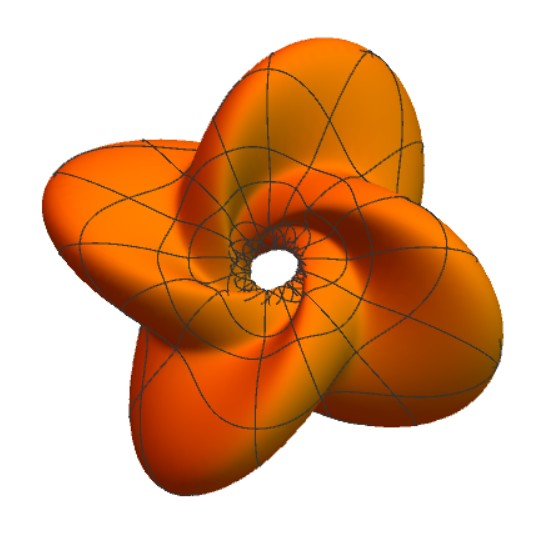

I am currently a PhD student at IMPA (Instituto de Matemática Pura e Aplicada) under the supervision of Professor Lucas Ambrozio.
My research area is Differential Geometry and Geometric Analysis. More specifically, I am interested in geometric functionals such as the Area functional and the Willmore energy.


Publications and Preprints
-
Bifurcations of the Clifford Torus as Willmore Surfaces in Berger Spheres
[arXiv]
Events and Presentations
- Evento Exemplo 1, Instituto de Matemática Pura e Aplicada (IMPA), Rio de Janeiro - Brazil, 2025.
- Evento Exemplo 2, Universidade de São Paulo (USP), São Paulo - Brazil, 2024. Poster presentation.